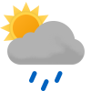

Weather
Germersheim
14.8-25.4
14.8-20.0 Wed

14.4-20.8 Thu

13.9-22.3 Fri

15.4-23.4 Sat

17.6-22.0 Sun
16.3-18.5 Mon

14.8-23.1 Tue

17.0-25.3 Wed

18.3-27.4 Thu
Erlabrunn 14.7-21.0
14.7-21.0

12.2-19.4 Wed

11.8-16.7 Thu

11.5-16.3 Fri
12.3-17.1 Sat

13.2-20.5 Sun
14.4-16.0 Mon

12.8-15.9 Tue

14.2-20.1 Wed

13.3-20.4 Thu
Schmilka
17.8-25.0

15.8-23.7 Wed
13.1-20.9 Thu

14.9-20.1 Fri

15.1-21.1 Sat

15.3-22.9 Sun

15.9-18.9 Mon

15.7-21.2 Tue

17.4-24.2 Wed

17.4-24.6 Thu